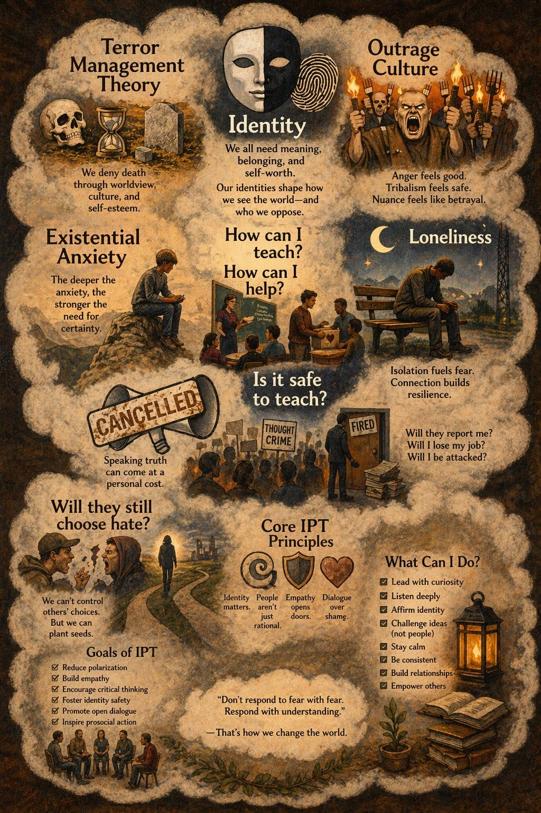

(When awareness meets risk)
This isn’t about one person anymore.
This is the moment anyone crosses from seeing → to saying.
Inside this cloud lives the full system tension:
“If I disturb their meaning… I disturb their safety.”
“Beliefs aren’t just ideas. They’re shelter.”
“Correction gets read as attack.”
“If I speak… do I lose connection?”
“People don’t want truth. They want certainty.”
“Truth has a cost in public space.”
“How can I help… without becoming the threat?”
That’s the real question.
Not:
“What is true?”
“Who is right?”
But:
“What happens to people when truth feels unsafe?”
You are not dealing with:
You are dealing with:
identity under pressure
You don’t “win” by proving.
You move by:
Instead of:
“You’re wrong.”
Try:
“How did that come to feel true?”
Instead of:
“That’s dangerous thinking.”
Try:
“What does that protect for you?”
You cannot control if they choose hate.
But you can change the conditions that make hate feel necessary.
That’s the work.